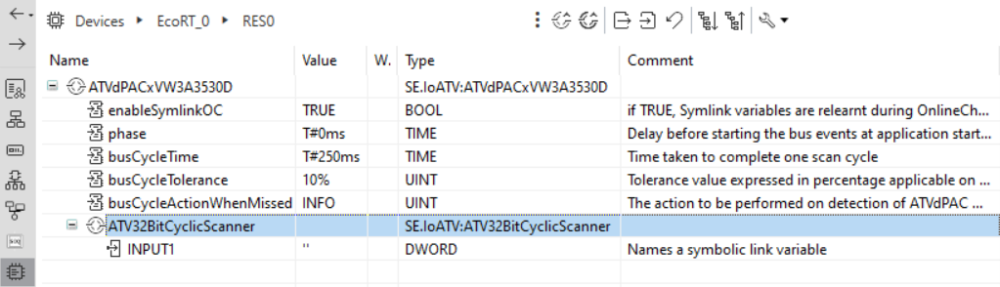
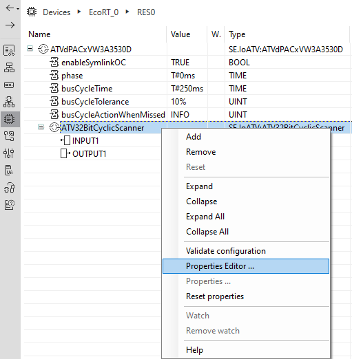
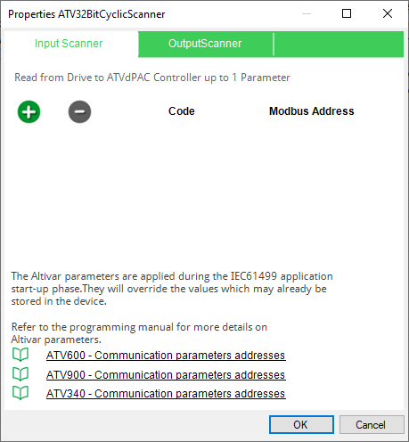
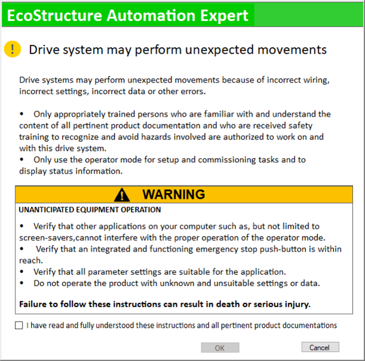
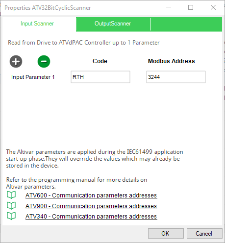

ATV32BitCyclicScanner Properties
Description
Hardware Configuration
-
In EcoStruxure Automation Expert, open the System tab
 → Logical Devices
→ Logical Devices  → Add Device
→ Add Device  that should have SE.DPAC.ATV_dPAC as a type → Click OK.
that should have SE.DPAC.ATV_dPAC as a type → Click OK.
-
Right click on the device to open the HW Configurator.

-
Right click in the HW Configuration window → add the ATVdPACxVW3A3530D → Right click on the added ATVdPACxVW3A3530D, add an ATV32BitCyclicScanner.

Hardware Properties Editor
The Hardware Properties Editor window allows you to edit and configure the Hardware parameter settings, which are transferred to the device upon the application start-up.
-
These parameters will override the existing parameter settings stored in the Altivar device
-
If these parameters are modified during run-time by an external source to EcoStruxure Automation Expert ( Webserver of the the Altivar device, SoMove, Modbus parameter write), then the IEC 61499 application might be impacted.
Right click on the ATV32BitCyclicScanner, select Properties Editor to open the Hardware Properties Editor.

The following figure illustrates the Hardware Properties Editor window for the ATV32BitCyclicScanner:

The add (+) button is used to add the parameters, the following figure shows the safety warning displayed when adding these parameters.

Add the input parameters using the addresses for Modbus and the respective code. The following figure illustrates the Hardware Properties Editor window for the Input Scanner:
